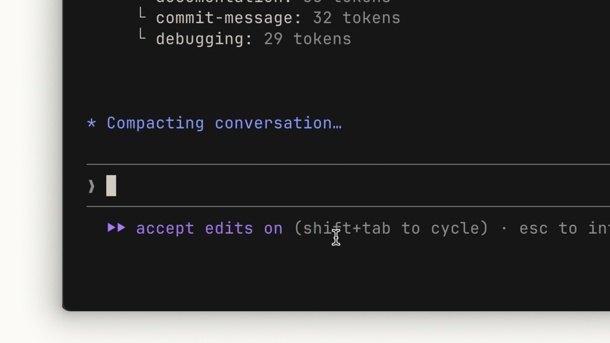
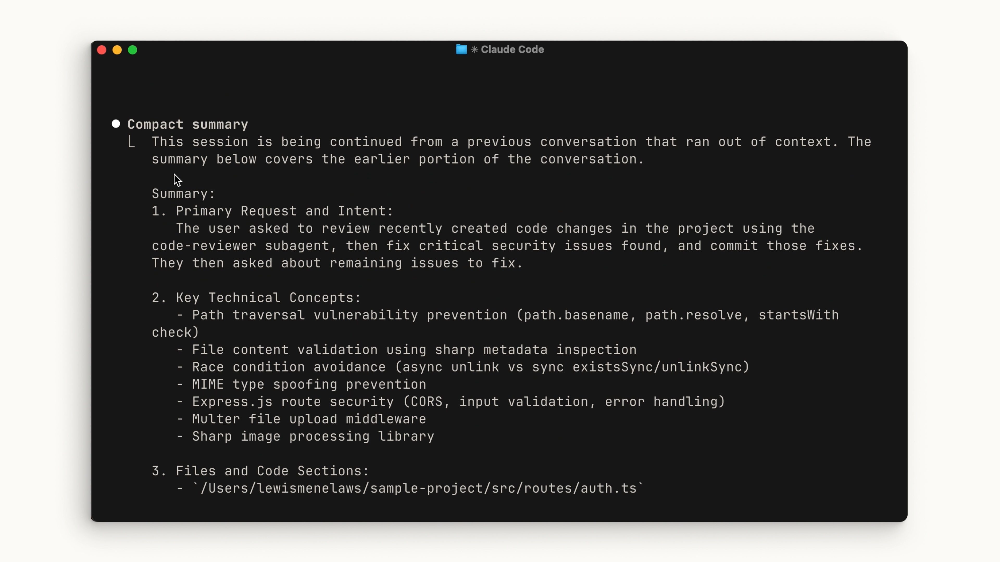
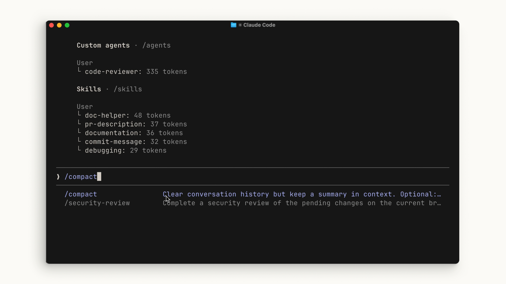
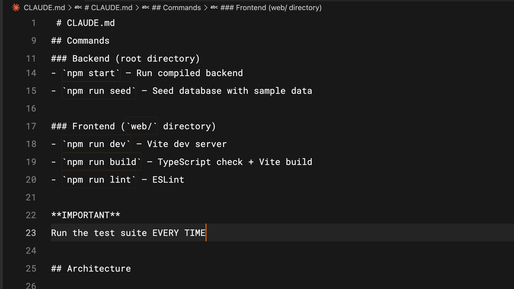

컨텍스트는 Claude의 작업 메모리입니다. Claude가 읽는 모든 파일, 실행하는 모든 명령, 여러분이 보내는 모든 메시지 — 이 모든 것이 컨텍스트 창의 공간을 차지합니다.
컨텍스트 창이란 무엇인가?
컨텍스트 창은 Claude가 메모리에 보유할 수 있는 공간의 크기라고 생각하면 됩니다. 프롬프트를 입력하거나, Claude가 파일을 읽거나, 도구를 호출하거나, 도구 호출 결과를 받을 때마다 모두 컨텍스트 창에 추가됩니다. 공간이 한정되어 있기 때문에, 이를 어떻게 활용하는지 최적화하는 것이 중요합니다.

컨텍스트가 가득 차면 어떻게 되는가
한계에 가까워지면 컨텍스트 창이 자동으로 압축됩니다. 압축은 중요한 세부 사항을 요약하고 불필요한 도구 호출 결과를 제거하여 공간을 확보합니다. 이 과정에서 세부 사항이 손실될 수 있다는 점에 유의하세요.


명령어
/compact 명령어를 사용하여 수동으로 압축을 실행할 수 있습니다. 이 명령은 해당 시점까지의 모든 내용을 압축합니다. 이전에 작업한 내용의 기억을 유지하면서 컨텍스트 공간을 확보하고 싶을 때 유용합니다.

이전 세션의 기억 없이 완전히 처음부터 시작하고 싶다면 /clear를 실행하세요. 이 명령은 모든 것을 제거합니다.

컨텍스트 상태를 확인하려면 /context 명령어를 실행하세요. 컨텍스트 크기의 개요, 가장 많은 공간을 차지하는 카테고리, 그리고 분류를 보여주는 시각적 그래픽을 확인할 수 있습니다.

언제 무엇을 사용할 것인가
일반적인 경험 법칙:
-
/compact사용 — 특정 기능을 작업하면서 컨텍스트 한계에 도달했지만 계속 작업해야 할 때 사용합니다. 컨텍스트를 현재 작업 중인 기능과 관련된 내용으로 유지하는 것이 중요합니다. -
/clear사용 — 새로운 기능을 시작하고 싶을 때 사용합니다. 이전 대화가 새로운 작업에 편향을 주는 것을 원하지 않을 것입니다. 세션 간에 Claude가 기억하기를 원하는 내용은 CLAUDE.md 파일에 넣어서 처음부터 다시 탐색할 필요가 없도록 하세요.

컨텍스트 공간 절약 팁
구체적으로 작성하세요. 모호한 프롬프트가 더 작아 보일 수 있지만, 장기적으로는 실제로 더 많은 컨텍스트를 소비합니다. 명확한 지시 없이는 Claude가 코드베이스를 더 많이 탐색하고 자체적으로 추론해야 하는데, 이는 상세한 프롬프트보다 훨씬 더 많은 컨텍스트 공간을 차지합니다.
MCP 서버를 관리하세요. MCP 서버는 사용하지 않을 때에도 기본적으로 사용 가능한 모든 도구를 컨텍스트에 로드합니다. 현재 프로젝트와 관련 없는 서버가 구성되어 있다면 끄는 것을 고려하세요. 또한 MCP 서버와 유사하게 작동하지만 모든 것을 미리 컨텍스트에 로드하지 않는 "스킬(Skills)"을 사용해 볼 수도 있습니다.
서브에이전트를 사용하세요. 서브에이전트는 메인 에이전트와 병렬로 실행되지만 완전히 별도의 컨텍스트 창을 가집니다. "인증 엔드포인트가 어디에 있나요?"와 같이 답변만 필요한 작업의 경우, 서브에이전트가 작업을 수행하고 메인 에이전트에 요약만 반환하여 주요 컨텍스트를 깔끔하게 유지합니다.
요약
Claude Code 내에서 컨텍스트를 관리하는 것은 매우 중요합니다. /compact를 사용하여 긴 세션을 요약하고 /clear를 사용하여 새로 시작하세요. 컨텍스트 창을 효과적으로 사용하려면: 프롬프트를 구체적으로 작성하고, 현재 컨텍스트를 무엇이 소비하고 있는지 확인하고, 결과만 필요한 작업은 서브에이전트에 위임하세요.